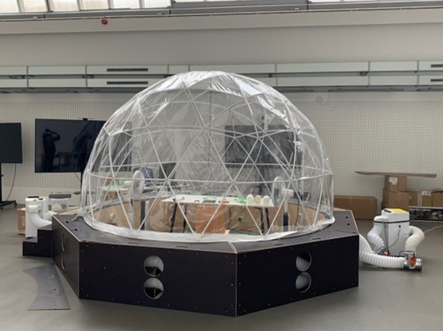

Climate Chamber
The climate chamber consists of a combination of an
igloo-shaped tent and a wooden floor substructure, which
increases the maximum available internal height of the dome to 2.8 m
and has an internal diameter of 3.6 m. Two circumferential ring pipes
are embedded in the floor construction, which circulate the hot and cold air
through 16 circular openings from two air conditioning units into the dome.

Climate chamber of the Virtual Reality simulation environment with thermal feedback (Source: UdK Berlin)
The climate dome is equipped with following devices:
- two AC devices with Heating, cooling and dehumidification functionality for supplying the twi aur tubes,
- one AC split device for fast internal lowering of the air temperature level within the dome,
- two humidifiers for increasing the air humidity within the dome,
- two convective heating devices for fast internal increasing of the air temperature level within the dome,
- two fans with 26 stages for simulating the felt air movement through room openings and
- one electrical radiator with three power stages for the simulation of the felt soalr radiation through transparent room surfaces.